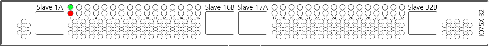

IO754 Usage Notes
IO754 Usage Notes — Usage information about the I/O module
Introduction to Modbus TCP
A Modbus TCP client usually sends requests to a server to read and write data of specific areas. A server usually manages 4 areas:
Coils (bit values the client can read and write)
Discrete Inputs (bit values the client can only read)
Holding Registers (word values the client can read and write)
Input Registers (word values the client can only read)
The client request consists of
a function code
the address of the data within the area
the number of elements

For read requests, the server sends a response to the client which contains the original function code and the data which has been requested. For write requests the server sends a simple confirmation containing the function code.
The following function codes are supported by Speedgoat ModbusTCP modules
FC1 (Read Multiple Coils)
FC2 (Read Multiple Discrete Inputs)
FC3 (Read Multiple Holding Registers)
FC4 (Read Multiple Input Registers)
FC5 (Write Single Coil)
FC6 (Write Single Holding Register)
FC15 (Write Multiple Coils)
FC16 (Write Multiple Holding Registers)
Depending on the data area, there are two types of address and length information:
Coils/Discrete Inputs: Bit address, Number of bits (bit-based)
Holding Registers/Input Registers: Word address, Number of words (16 bit-based)
In the following tables you can see how the four data areas are structured and how bit- and word-addressing works. The Modbus addresses 0XXXX, 1XXXX, 3XXXX and 4XXXX are still commonly used to label ModbusTCP registers. They have been taken over from ModbusRTU but serve no purpose in ModbusTCP addressing.


Operation Modes
The IO754 I/O module manages the four data areas as described in the introduction. The IO754 Simulink block library supports two modes to access the data:
Message mode
IO mode
Select the mode in the IO754 Setup block.
Message Mode
Use IO754 Message blocks to access Coils, Discrete Inputs, Holding Registers and Input Registers. You can use the block multiple times in a model. Use the Address and Quantity block mask parameters to directly address specific data within a data area. The client performs the same role on the network side.
Compared to IO mode, the Message mode is slow because the incoming client requests are handled within the real-time application. This results in a higher target execution time.
IO Mode
In IO Mode, the module does not provide the four typical Modbus data areas. Instead, the data is managed in one RECEIVE area (RX) and one TRANSMIT area (TX). Write requests from the client always relate to the RX area. Read requests relate to the TX area. Bit-based and word-based registers are merged. The following two write requests from the client write the same data range in the server's RX area:
| Function Code | Description | Address | Quantity |
| FC15 | Write Multiple Coils | 40 | 32 |
| FC16 | Write Multiple Holding Registers | 5 | 2 |
IO Mode is not recommended for the simulation of a real device. It is more suitable if the user can freely define input and output data points and wants to provide them in a mode that is more communication oriented.
To access RX and TX areas, use the IO754 Send and Receive blocks. Your model can only contain one Send and one Receive block for each I/O module in your target machine.
The Send block writes data of a given length to the TX area starting at offset 0 (Discrete Input 0, Input Register 0). Use Bit and Byte Packing blocks to assemble the byte vector. You cannot write to single offsets. The block always writes the entire content of the TX area.
The Receive block reads data of a given length from the RX area starting at offset 0 (Coil 0, Holding Register 0). Use Bit and Byte Unpacking blocks to extract data from the byte vector. You cannot read from single offsets. The block always reads the entire content of the RX area.
Compared to Message mode, the IO mode is fast, because the incoming client requests are handled directly by the Modbus stack. This results in a reduced target execution time.
Specifications
| General | |
| Number of ModbusTCP servers per module | IO754: 1 |
| IO754-32: 32 | |
| TCP port | 502 |
| Maximum number per read telegram | 125 words (FC3, FC4) |
| 2000 bits (FC1, FC2) | |
| Maximum number per write telegram | 123 words (FC16) |
| 1968 bits (FC15) | |
| IO Mode | |
| Maximum length of RX data | 5760 bytes |
| 2880 words | |
| 46080 bits | |
| Maximum length of TX data | 5760 bytes |
| 2880 words | |
| 46080 bits | |
| Message Mode | |
| Maximum number of Coils | 524288 (65536 bytes) |
| Maximum number of Discrete Inputs | 524288 (65536 bytes) |
| Maximum number of Holding Register | 32768 (65536 bytes) |
| Maximum number of Input Registers | 32768 (65536 bytes) |
Front Plate Description
The IO754 acts as one Modbus TCP Server exclusively. The two RJ45 connectors simply serve to build up a line-based network structure. Plug the cable from the Modbus TCP Client or the previous Server into the first socket. Connect the second socket with the next Modbus TCP Server. The LEDs described below indicate the communication status of the single Modbus TCP Server.


The IO754-32 simulates 32 Modbus TCP Server nodes, split into two clusters with 16 protocol chips each. Within a cluster, the nodes represent a line-based network structure. Build up a combined network by connecting both center sockets. You can use the leftmost or rightmost socket to connect the Modbus TCP Client. Use the remaining socket to connect an external Modbus TCP Server or another IO754-32 module.
Each node has two LEDs that indicate the communication status.

LED Status Description
| LED | Color | State | Meaning |
| SYS | Green | On | Operating system running |
| Green/Yellow | Blinking | Second stage bootloader is waiting for firmware | |
| Yellow | On | Bootloader netX (= romloader) is waiting for second stage bootloader | |
| Off | Off | Power supply for the device is missing or hardware defect | |
| RUN/COM1 | Green | On | Connected: OMB task has communication. At least one TCP connection is established |
| Green | Flashing (1 Hz) | Ready, not yet configured: OMB task is ready and not yet configured | |
| Green | Flashing (5 Hz) | Waiting for Communication: OMB task is configured | |
| Off | Off | Not Ready: OMB task is not ready | |
| ERR/COM2 | Off | Off | No communication error |
| Red | Flashing (2 Hz, 25% on) | System error | |
| Red | Red | Communication error active |
Note that only the IO754 PCI and PCIe modules have the SYS LED. This LED does not feature on the IO754 mPCIe module and the IO754-32 multi-node simulator.
Status Codes
For the list of status codes, please refer to Status Codes for Protocols Supported with the IO64x/IO75x Modules.